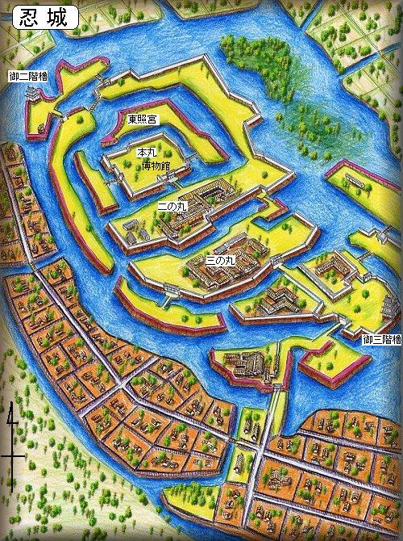

1．はじめに――なぜ四人はまとめて語られるのか
石田三成、直江兼続、大谷吉継、真田幸村。この四人が現代まで人気を持つ最大の理由は、単に強かったからではありません。「勝った人」ではなく、「負けてもなお筋を通した人」として記憶されているからです。家康は歴史に勝ちました。しかし四人は人の心に残りました。この違いがとても大きいのです。
しかもこの四人は、だいたい同世代です。家康が1543年生まれなのに対し、三成と兼続は1560年前後、吉継もほぼ同時期、幸村はさらに若い1567年生まれとされます。つまり家康が若いころから命がけの戦場を経験していた時、四人の多くはまだ子どもか、まだ生まれてもいなかったのです。ここに、見えにくいけれど大きな差があります。
2．まず押さえたい年代差と時代背景
家康は、桶狭間・姉川・長篠・本能寺後の混乱・小牧長久手など、戦国の荒れた時代をひと通り生き抜きました。しかも勝った経験だけでなく、負けて耐えた経験も多い。人質生活、主君との関係、同盟の揺らぎ、敗走、再起――そうしたものを身体で知っています。言い換えれば、家康は「戦争の表」だけでなく「戦争の裏」も知っていたのです。
これに対して四人は、秀吉のもとで才能を認められて伸びた世代です。もちろん彼らも戦乱を知らないわけではありません。しかし、家康ほど長く、泥だらけの修羅場をくぐってはいない。これは能力の差というより、時代に与えられた訓練の差です。家康は崩壊する秩序の中で鍛えられ、四人は完成しつつある政権の中で育った。その違いが、関ヶ原での読みや、裏切りへの反応に表れてきます。
| 人物 | 生年 | 関ヶ原時のおおよその年齢 | 時代との関わり方 |
|---|---|---|---|
| 徳川家康 | 1543年 | 57歳 | 戦国の最前線を長く経験。敗北・忍耐・調略・再起を知る。 |
| 石田三成 | 1560年 | 40歳 | 秀吉政権の中で実務能力を発揮。政権の仕組みを支える側で成長。 |
| 直江兼続 | 1560年 | 40歳 | 上杉家の中枢として成長。外交・内政・軍事を一体で考える。 |
| 大谷吉継 | 1559年頃 | 41歳 | 文武両面に通じ、三成の友でありながら現実を見る目も持つ。 |
| 真田幸村 | 1567年 | 33歳 | もっとも若く、最後の戦場で一気に名を上げる。 |
この表で大切なのは、年齢そのものよりも「何を見て育ったか」です。家康は乱世の底を知り、四人は豊臣秩序の上で成熟した。ここに、戦い方の差が生まれました。
3．四人の原点――秀吉との出会い
四人の人生を動かした最大の存在は、やはり豊臣秀吉です。ただし、秀吉とのつながり方はまったく同じではありません。三成は逸話に彩られたスカウト型、吉継は実務と軍事の才能を認められた抜擢型、兼続は上杉家という大きな家を背負った外交型、幸村は人質という政治的立場から豊臣との距離を縮めていった型です。
幸村は少し事情が違います。真田家は生き残るために強い相手へ近づく必要があり、その結果として幸村は豊臣の世界に入っていきました。ここでは、武将としての自分というより、家の戦略の一部として生きることを学んだはずです。この経験は、のちに関ヶ原で父とともに独自の判断をする土台にもなったでしょう。
三成は「人を見て動く力」で、兼続は「家を代表する器」で、吉継は「仕事を任される総合力」で、幸村は「家の運命を背負う立場」で豊臣世界に入った。出発点が違うから、最終的な「義」の形も違っていくのです。
4．四人を結ぶ人間関係
西軍四将が魅力的なのは、ただ同じ陣営にいたからではありません。人間関係が濃いのです。三成と吉継の友情はとくに有名で、吉継が「お前には人望がない」と厳しい現実を伝えた逸話は、甘やかしではない本当の友情を感じさせます。負けそうな戦だと知りながらも、三成を見捨てない。その選択には、理屈だけで説明できない重さがあります。
兼続は三成と連携し、家康を会津方面へ引きつける役割を担いました。幸村は吉継の娘を妻に迎えたと伝わり、そこには政治と家族の結びつきがあります。戦国時代の人間関係は、友情、婚姻、主従、利害が重なり合ってできています。だから誰か一人を裏切ることは、単に作戦を変えるという以上の意味を持ちました。
5．家康とはどんな相手だったのか
四人を語るなら、家康を単なる悪役にしてはいけません。家康は冷たく見えることがありますが、その冷たさは長く生き抜くために身につけた防御でもありました。若い頃から人質となり、主君の運命や大勢力の都合に振り回され、勝てない相手には頭を下げ、耐え、時期を待つ。それを何十年も繰り返した人です。
だから家康は、戦場を「その日の勝負」では見ません。誰がどこで裏切るか、どの家がどちらに付けば得か、今日の敗北をどう明日の勝利につなげるかというふうに、戦いを構造で見るのです。ここが、目の前の戦いに全力を注ぐ若い世代との決定的な差でした。
家康が恐ろしいのは、戦場で強いからだけではありません。相手が自分から崩れるように仕組みを作るところです。関ヶ原ではまさにそれが起きました。家康は西軍を真正面から打ち破ったというより、西軍が一枚岩になれない状態を先に作っていました。
6．石田三成――制度を守ろうとした男
石田三成は、現代でも評価が割れる人物です。「理屈っぽい」「人望がない」「現場を知らない」と言われる一方で、「豊臣政権をもっとも真面目に守ろうとした人」としても評価されます。この両面を一緒に見ないと、三成は分かりません。
三成は、戦国武将というより、できあがりつつある国家の官僚に近いところがあります。誰がどこに兵を出すか、食糧をどう回すか、年貢や交通をどう管理するか。こういう部分で秀吉政権を支えました。乱世では目立ちにくい力ですが、平和を作るには必要な力です。言い換えれば、三成は戦国を終わらせる側の人でした。

その一方で、三成の弱点もはっきりしています。彼は人を動かす時、筋の通った説明はできても、相手の感情に寄り添うのが得意ではなかったようです。武功派の武将たちとぶつかりやすかったのもそのためでしょう。正しいことを言っていても、人の心をつかめなければ大きな連合軍はまとまりません。関ヶ原で三成が苦しんだのは、まさにそこでした。
ただ、三成を「負けたから無能」と決めつけるのは雑です。むしろ三成は、豊臣政権がこのままでは家康に飲み込まれると見抜いていた可能性があります。だからこそ、家康と正面から対立した。勝ちやすい道ではなく、守るべき仕組みを守ろうとした。その意味で三成は、最後まで政治の人だったのです。
7．直江兼続――義と現実を両立させた男
直江兼続は、「愛」の前立てで有名ですが、本当に注目すべきなのはそこではありません。兼続のすごさは、義を掲げながらも、現実の政治と組織運営から逃げなかったところにあります。四人の中で最も長く生き、敗北後の世界まで見据えて行動したのが兼続でした。
家康に対して強い態度をとった直江状は、よく「挑発状」として知られます。しかしあれは単なる挑発ではなく、上杉家の理屈と立場を示す文書でもあります。つまり兼続は、感情で噛みついただけではなく、言葉で政治を戦っていたのです。

長谷堂城の戦いでは、上杉軍は関ヶ原本戦の結果によって不利な立場に置かれました。それでも兼続は、絶望的な混乱の中で軍をまとめ、上杉家を完全崩壊させずに撤退させます。派手さはありませんが、これはとても高度な力です。勝つより難しいことがあります。それが、負けた後に家を残すことです。
関ヶ原のあと、兼続は現実を見ます。豊臣への感情だけで動けば上杉家は滅びる。だから彼は恭順し、藩政を整え、家を守る道を選びました。義を捨てたのではありません。義を家の存続という形に変えたのです。ここが兼続の深さです。
8．大谷吉継――友情と知略の人
大谷吉継は、西軍四将の中でもとくに人気が高い人物です。その理由ははっきりしています。強く、賢く、しかも人として美しいからです。三成への友情が強調されがちですが、吉継はそれだけの人ではありません。彼は戦場の現実を見抜く目を持っていました。
関ヶ原で、小早川秀秋の動きが怪しいことを最も警戒していたのは吉継だと伝わります。つまり彼は、味方の心がすでに一枚岩ではないことを理解していたのです。それでも西軍に立ったのは、三成を見捨てられなかったからでしょう。ここに、現実を知りながら理を曲げない苦しさがあります。
吉継は病を抱えながらも指揮を執ったとされます。身体の苦しさだけでも大変なのに、味方が崩れていく未来まで予感していたとすれば、その精神的重さは想像を超えます。だから吉継の最期は、単なる敗死ではなく、分かっていながら引き受けた敗北として胸に迫るのです。
9．真田幸村――最後に燃えた戦術の天才
真田幸村は、西軍四将の中で最も「戦場の華」がある人物です。関ヶ原本戦では父・昌幸とともに別働的に動き、のちの大坂の陣で一気に伝説化しました。とくに大坂冬の陣の真田丸、大坂夏の陣の突撃は、幸村を「日本一の兵」と呼ばせるほど強烈でした。

幸村のすごさは、兵の数や立場で劣っても、局地的に敵を揺さぶる構想力にあります。真田丸では守りの地形と工夫を活かし、夏の陣では突撃で家康本陣を脅かしました。これは単なる根性ではありません。敵の重心がどこにあるかを読み、一点を刺す戦術です。
ただし、幸村には三成や兼続のような政権運営の土台はありませんでした。幸村は最後の輝きとしては最も強いけれど、長く続く秩序を設計する人ではない。だから彼の魅力は、「これで歴史をひっくり返せるかもしれない」という一瞬の火花にあります。家康が構造で勝った人なら、幸村は瞬間で歴史に爪痕を残した人なのです。
10．関ヶ原・長谷堂・忍城・大坂の陣をつなげて見る
戦国の戦いは、ひとつひとつをバラバラに覚えると見失います。むしろ線でつなぐと分かりやすい。忍城は三成の実務型の強さと現場対応の弱さを示し、長谷堂城の戦いは兼続の撤退戦と組織維持のうまさを示し、関ヶ原は吉継が現実を読みながらも友情を取った戦いであり、大坂の陣は幸村が最後の輝きを見せた戦いです。全部つなぐと、それぞれの得意分野がはっきり見えます。

こうして見ると、西軍四将は全員が「同じ型の武将」ではありません。三成は制度、兼続は組織、吉継は知略と友情、幸村は局地戦。だから西軍がもし本当に強く結びついていたなら、かなり厄介な集団だったはずです。しかし現実には、それぞれの強みが一つの大きな戦略に統合されませんでした。
11．なぜ義の軍は負けたのか
西軍が負けた理由を「義は戦いに弱いから」とだけ言うのは半分しか当たっていません。本当は、義が悪いのではなく、義を支える仕組みが弱かったのです。西軍には豊臣への忠誠や友情がありましたが、それだけで大勢力を動かし続けるのは難しい。多くの武将は、理想だけでなく家の存続や領地の安全でも動きます。そこへ家康は入り込みました。
| 比較項目 | 西軍 | 東軍 |
|---|---|---|
| 結束の中心 | 豊臣への忠義、友情、理屈 | 家康という明確な指揮軸、恩賞の期待 |
| 弱点 | 利害が一致しにくい、裏切りに弱い | 家康一強への不満はあるが、勝ち筋が見えやすい |
| 戦い方 | 正しさを示して味方を集める | 先に寝返り工作を進め、相手を崩す |
| 結果 | 個々は強いが全体で崩れる | 個々の差を連合の構造で埋める |
三成が正しかったとしても、それだけで勝てるわけではありません。兼続が強くても、本戦で勝てなければ地方戦も苦しくなる。吉継が読めていても、読んだだけでは裏切りは止められない。幸村が天才でも、天下の流れを一人で変えることはできない。ここに、西軍の悲劇があります。個の優秀さが、連合全体の勝利につながらなかったのです。
12．家康はなぜ勝てたのか
家康の勝利を説明する時、「老獪だった」で済ませると中身が見えません。家康の強さは、勝つために必要な要素をばらばらにせず、一つの流れとして組み立てたところにあります。外交、婚姻、恩賞、恐怖、待機、挑発、現地の布陣、そして勝った後の処理まで、全部つながっているのです。
とくに大きいのは、家康が人の心を「善悪」ではなく「動く条件」で見ていたことです。この人は忠義で動くのか、損得で動くのか、恐れで動くのか、将来の見通しで動くのか。家康はそこを読み、相手が自分の都合でこちらに来るように仕向けました。だから家康の勝利は、ただの運や裏切りではありません。裏切りが起きるように環境を整えていたのです。
さらに家康は、勝った後の秩序まで考えていました。戦場で勝つだけでなく、その後に反乱しそうな勢力をどう処理するか、豊臣をどう孤立させるか、江戸幕府という長い体制をどう築くか。その意味で家康は、四将よりもはるかに遠くまで見ていました。冷たいように見えても、それが国家経営者としての視野だったとも言えます。
13．最後まで生き残った兼続は何を思ったか
四人の中で最後まで生き残った兼続は、敗北の後を生きた人です。ここが重要です。三成も吉継も幸村も、もっとも劇的な場面で散りました。それに対して兼続は、その後の長い時間を引き受けた。負けた後にどう生きるか。これはとても重い問いです。
兼続は、上杉家を守るために現実的な選択をしました。豊臣への感情だけでは藩は残せない。だから頭を下げるべき時には下げ、内政を整え、米沢藩の基礎を作っていきます。ここに、若い頃の「義の兼続」と、晩年の「家を守る兼続」がつながっています。変節ではありません。守るべきものが、戦場の名誉から、家と領民の未来へ移ったのです。
大坂の陣で幸村が家康本陣に迫ったという報を聞いた時、兼続は何を思ったでしょうか。勝ち目はないと分かっていても、なお燃え上がる若い武将の姿に、かつての自分たちの熱を重ねたかもしれません。そして同時に、「あの熱だけでは家は残らない」とも知っていたはずです。その二つを同時に抱えるところに、兼続の晩年の重みがあります。
15．武断派から見た四人――加藤清正・福島正則とのずれ
豊臣家には、三成たちのような実務や秩序を重んじる人々だけでなく、加藤清正や福島正則のように、戦場で手柄を立てて地位を上げてきた武将たちもいました。ここで大切なのは、どちらが善でどちらが悪かではありません。評価の基準そのものが違っていたということです。三成は「政権が安定するか」を基準に見ますが、武断派は「自分たちが戦って稼いだ功績が正しく扱われているか」を基準に見ます。基準が違えば、同じ出来事を見ても受け止め方が変わるのです。
朝鮮出兵の時、このずれはさらに大きくなりました。現場で戦っている武将から見れば、後方にいる奉行衆は口うるさく、現実を知らない存在に見えます。一方、奉行衆から見れば、前線の武将たちは全体の秩序や補給を軽視して自分勝手に動く存在に見える。実際にはどちらの言い分にも一理あります。しかし問題は、その一理を持つ者同士が同じ政権の中で協力できなかったことでした。
この対立の中で、三成はとりわけ損な役回りを引き受けます。秩序を保つために厳しいことを言えば嫌われる。けれど言わなければ政権は崩れる。つまり三成は、人気を捨ててでも仕組みを支える側に立っていたのです。ここを理解すると、「人望がなかった」という言葉の意味が少し変わって見えてきます。人気のある人が必ずしも正しいとは限らず、嫌われ役が必要な時代もあるのです。
大谷吉継は、こうした対立の間に立てる数少ない人物だったかもしれません。武勇だけでなく実務も理解し、三成とも深くつながりがある。もし吉継のような人がもっと大きく橋渡し役を果たせていたら、西軍というか豊臣政権そのものの分裂はもう少し抑えられた可能性があります。逆に言えば、吉継という潤滑油が一人では足りないほど、豊臣政権内部の亀裂は深かったのでしょう。
兼続は上杉家の立場から見ていたため、この対立に直接巻き込まれきってはいませんでしたが、中央政権が一枚岩でないことは理解していたはずです。幸村もまた、豊臣家の内側に深く入り込みつつ、真田家という独自の家の論理を持っていました。つまり西軍四将は全員が「豊臣の人」でありながら、完全な内部の同質集団ではありません。そこが彼らの難しさであり、面白さでもあります。
16．朝鮮出兵と関ヶ原の前史――なぜ豊臣政権は弱っていったのか
関ヶ原を本当に理解したいなら、その前にある朝鮮出兵を無視できません。秀吉は巨大な外征を行いましたが、この戦争は豊臣政権に大きな負担を与えました。兵糧、船、兵、金、現地統治、明との戦い、朝鮮側の抵抗――どれも重く、しかも短期で片づくものではありませんでした。国内で最強だった武将たちも、海を越えた長期戦には苦しみます。
ここで大切なのは、朝鮮出兵が単に失敗しただけでなく、政権内部の不満と不信を増やしたことです。前線の武将は奉行を嫌い、奉行は前線の武将を信用しない。戦争が長引けば、功績の扱いにも不満が出る。しかも秀吉は晩年に入り、政権の将来は不安定になっていく。つまり朝鮮出兵は、豊臣政権の中で眠っていた亀裂を一気に広げる働きをしてしまったのです。
家康はこの状況をじっと見ていました。自分が無理に前に出なくても、豊臣の中から不満が噴き出してくるなら、それを待てばいい。ここに家康の恐ろしさがあります。朝鮮出兵そのものを直接家康が起こしたわけではありません。しかし、その後に生まれた疲弊と分裂を、最も上手に利用したのが家康でした。
三成は、だからこそ家康を危険視したのでしょう。豊臣政権が内部から弱っていく時、最も強い外部の実力者が何をするか。答えは明らかです。家康は必ず主導権を握りに来る。三成が見ていた危機とは、単なる好き嫌いではなく、政権構造の崩れだった可能性があります。関ヶ原は突然起きたのではなく、朝鮮出兵後の疲弊の上に積み重なって起きたのです。
この視点に立つと、西軍四将は「なぜ家康と戦ったか」がもっとはっきりします。三成は体制防衛、兼続は家康の拡大への警戒、吉継は友を見捨てられない心、幸村は豊臣とのつながりと反徳川の気概。理由はそれぞれ違っても、背景には豊臣政権の揺らぎがありました。そしてその揺らぎ自体が、家康の最大の追い風だったのです。
17．誰が一番優秀だったのか――四人の能力を分けて考える
「四人の中で誰が一番優秀だったのか」という問いは、とても面白い反面、とても難しい問いです。なぜなら、能力の種類が違うからです。三成は制度設計と兵站、兼続は外交と組織運営、吉継は総合判断と戦術、幸村は局地戦の爆発力に秀でていました。学校の成績を一つの数字で比べるように、戦国武将を一つの物差しで比べることはできません。
それでもあえて分類してみると、政権を運営する力では三成と兼続、総合戦闘指揮では吉継、戦場の華と一点突破では幸村という見方ができます。つまり「誰が最強か」ではなく、「何において最強か」で考えるほうが正確なのです。
もし平時に大きな政権を支えるなら、三成や兼続が強いでしょう。もし大軍を率いて不安定な戦局をさばくなら、吉継の冷静さが光るかもしれません。もし絶望的な局面でわずかな突破口を開くなら、幸村ほど恐ろしい武将はいないでしょう。こうして見ると、西軍四将は本来、ばらばらに使うより連携させた時に最も強かったはずです。
ただし、能力が高いことと勝てることは違います。三成の高さは嫌われ役を呼び、兼続の高さは上杉家という枠に縛られ、吉継の高さは友への情に結びつき、幸村の高さは瞬間的すぎて長い政治に接続しにくい。つまり四人はみな高い能力を持ちながら、その長所がそのまま弱点にもなるタイプでした。ここが、彼らを単純な英雄にしない面白さです。
では家康はどうか。家康は一つの能力が飛び抜けているというより、さまざまな能力を長期戦の中で束ねる力が圧倒的でした。戦術だけなら幸村に劣る場面があるかもしれない。読みだけなら吉継に近いところもあるかもしれない。行政だけなら三成や兼続に学ぶ点もあったかもしれない。しかし家康は、それら全部を「最後に勝つため」にまとめ上げた。そこが天下人たるゆえんです。
18．もし西軍が勝つにはどうすればよかったのか
歴史に「もし」はありませんが、考えてみることには意味があります。西軍が勝つには、まず小早川秀秋の裏切りを防ぐか、それが不可能なら裏切っても致命傷にならない配置にする必要がありました。大谷吉継はその危険を強く意識していたとされますが、一人の読みだけで全軍を変えるのは難しい。つまり西軍には、危険な場所に対する全体の共通認識が足りなかったのです。
次に必要だったのは、三成が前面に出すぎないことだったかもしれません。三成は西軍の中心人物ですが、同時に反感を持たれやすい存在でもありました。表の総大将と、裏で組織する実務担当を分け、より武断派にも受け入れられやすい顔を立てたほうが、西軍全体の結束は増した可能性があります。つまり正しい人が必ずしも先頭に立つべきとは限らないということです。
さらに、兼続や上杉軍との連動がもっと強ければ、家康はより厳しい挟み撃ちの不安を抱えたでしょう。ただしこれも簡単ではありません。地理、時間差、各家の事情があるからです。戦国の連合軍は、現代の国家軍隊のように一つの命令で動くわけではありません。だからこそ家康は強かったのです。連合の弱さを知り、その弱さを突くのがうまかったからです。
結局のところ、西軍が勝つには「義を掲げる」だけでなく、「義に参加したほうが得だ」と多くの武将に思わせる必要がありました。理想と利害を結びつけられた時、はじめて大勢力は本当に動きます。これは現代の組織にも通じる話です。正しい理念だけで人は長く動かない。かといって利益だけでも持続しない。その両方をどうつなぐかが難しいのです。
だから西軍敗北の最大の理由は、「誰か一人が悪かった」ではなく、「理想・感情・利害・軍事の統合が足りなかった」にあると考えるのが自然です。四人の能力は高かった。しかし高い能力がばらばらに存在するだけでは、家康のような一枚上の設計者には勝てなかったのです。
19．若すぎたのか――青年将校の独走だったのか
「豊臣方は青年将校の独走で負けた」という見方があります。しかし、これは少し乱暴です。たしかに家康に比べれば西軍四将は若い。けれど、三成も兼続も四十歳前後で、当時としては十分に中堅以上です。単なる若さだけで説明できるなら、もっと年上の大名たちがいれば西軍は勝てたことになりますが、実際はそう単純ではありません。
むしろ問題は、年齢よりも経験の種類です。家康は「何度も負け、耐え、待った」経験を持っていました。四人は有能でしたが、家康ほど長く、泥くさい敗北学を身につけてはいない。つまり不足していたのは元気や勇気ではなく、裏切り・停滞・持久戦を前提にした発想だったのです。これは年齢の差というより、時代の教育の差でした。
また、西軍は四将だけで動いていたわけではありません。多くの大名、家臣団、地域事情、豊臣家内部の対立が絡んでいます。だから「青年将校の独走」という言い方は、問題を少しきれいにしすぎています。本当は、豊臣政権全体の分裂と調整不足が大きかったのであって、若い理想家が暴走しただけではないのです。
ただし、西軍四将に共通する弱さがあったとすれば、それは「正しさが伝われば人は動く」という期待をどこかに持ちやすかったことかもしれません。家康は違いました。人は正しさだけでは動かない、と知っていた。だから条件を出し、利益を見せ、恐れも使った。ここに、若さというより「人間観の差」がありました。
この意味で、西軍四将は若かったというより、まだ「人間を信じる側」にいたと言えるかもしれません。家康はもっと冷たく、人間の弱さを前提にして政治をした。その違いが、結果として天下を分けたのです。
20．家康と西軍四将の完全比較――人物・戦略・残したもの
ここまで読んでくると、家康と四将は「誰が上か」を単純に決める対象ではなく、歴史の中で役割が違う人物たちだと分かります。それでも比較すると、違いはかなり鮮明です。家康は全体設計の人、三成は体制維持の人、兼続は家の存続と理念をつなぐ人、吉継は友情と現実を両立させる人、幸村は最後の一点に全てを燃やす人でした。
人物の重心も違います。家康は「自分が生き残ること」が最終的に秩序を作ると考えた人です。三成は「仕組みが正しく保たれること」に重心がある。兼続は「主家を残すこと」に重心があり、吉継は「人として見捨てないこと」に重心がある。幸村は「最後まで武士として輝くこと」に重心がある。どれが正しいというより、守ろうとしたものが違うのです。
| 人物 | 最も強い点 | 弱点 | 歴史に残した印象 |
|---|---|---|---|
| 徳川家康 | 長期戦略、調略、持久力、体制構築 | 人情味では損をしやすい | 最後に勝った国家設計者 |
| 石田三成 | 制度維持、補給、実務、理屈の明快さ | 感情の調整、人望の確保 | 豊臣体制を守ろうとした官僚武将 |
| 直江兼続 | 外交、内政、組織維持、敗戦処理 | 主家という枠から完全には自由になれない | 義と現実をつないだ名補佐役 |
| 大谷吉継 | 総合判断、戦術、友情と現実の両立 | 情に厚く、損でも引き受ける | もっとも理解していた悲劇の知将 |
| 真田幸村 | 局地戦、突破力、兵の士気を上げる力 | 長期政治・大組織運営には向かない | 最後に燃えた「日本一の兵」 |
そして「何を残したか」も違います。家康は江戸幕府という巨大な制度を残しました。三成は勝者にはなれなかったが、「正しい体制を守ろうとした人」として語り継がれます。兼続は敗北後の生き方を示し、吉継は友を思う心と冷静な知略を同時に残し、幸村は最後まであきらめない武士像を残しました。つまり、家康は世の中の形を残し、四将は人間の理想像を残したとも言えます。
この比較をすると、「どちらが上か」ではなく、「何を優先した人生だったのか」を考えたくなります。勝って制度を残した家康は強い。しかし負けても人間としての輪郭が濃く残る四将もまた強い。歴史の面白さは、ここにあります。
21．現代への教訓――この物語はなぜ今でも刺さるのか
西軍四将と家康の話が今でも人気なのは、戦国時代の物語だからではありません。現代の学校、会社、政治、組織にも同じ問題があるからです。正しいことを言う人がいつも勝つわけではない。人望があっても仕組みを作れなければ長続きしない。実務に強い人が感情をつかめないこともあるし、情に厚い人が損な役回りを引き受けすぎることもある。理想と現実のずれは、今でも私たちのすぐそばにあります。
三成から学べるのは、「嫌われ役でも必要な仕事をする」強さです。兼続から学べるのは、「理想を守るために現実を引き受ける」強さです。吉継から学べるのは、「現実を知っても人を見捨てない」強さです。幸村から学べるのは、「最後の最後まで自分の力を出し切る」強さです。そして家康から学べるのは、「一日ではなく十年で考える」強さです。
中学生のうちは、つい「正しいなら勝つはず」と思いがちです。でも現実はそうではありません。正しさを通すには、仲間を集める力、仕組みを作る力、時には待つ力が必要です。逆に、勝つことだけを考えすぎると、人の心が離れていく。だから本当に大切なのは、どちらか一方ではなく、正しさと現実をどう結びつけるかです。
関ヶ原の物語は、勝者である家康だけを見ても半分しか分かりません。敗れた四将を見るからこそ、「勝つ」とは何か、「残る」とは何か、「正しい」とは何かを考えられます。だからこの物語は終わった歴史ではなく、今を生きる私たちへの教材でもあるのです。
22．四人の人生年表を一気に見る――同時代をどう生きたか
最後に、四人を別々の英雄としてではなく、同じ時代を少しずつ違う位置から見ていた人たちとして眺めてみましょう。三成と兼続と吉継はほぼ同世代で、秀吉の天下が形になる時代に大人になりました。幸村はそこからさらに若く、完成した秩序の中で武士としての自分を磨いた世代です。だから四人の時間感覚は、家康よりもずっと「豊臣の時代」に寄っています。
三成は秀吉政権の制度の中枢へ、兼続は上杉家の中枢へ、吉継は文武両面の実務へ、幸村は真田家の運命とともに豊臣世界へ入っていきました。つまり四人はそれぞれ別の入口から同じ大きな時代へ入ったのです。そして秀吉の死後、その同じ時代が崩れ始めた時、四人はそれぞれの立場からそれを止めようとした。三成は制度で、兼続は家の論理で、吉継は友情と現実で、幸村は最後の武勇で応えました。
この年表的な見方をすると、四人が「たまたま西軍にいた人」ではないことが分かります。彼らは豊臣の時代が生んだ人材であり、その時代の終わりをそれぞれ違う形で引き受けた人たちなのです。だから四人を見ていると、単に個人の英雄伝ではなく、一つの時代そのものの青春と終焉を見ているような気持ちになります。
家康は、その青春を外から冷静に見ていた存在でした。だから勝てたとも言えます。四人は時代の中に深く入りすぎていた。家康は少し距離をとっていた。その差が、最後に歴史を分けました。けれど、私たちが四人に惹かれるのは、彼らが時代の中で本気で生きたからです。勝つためだけでなく、守るべきもののために全力を尽くしたからです。
23．まとめ――美しい敗北と冷たい勝利
石田三成は制度を守ろうとし、直江兼続は家を守り、大谷吉継は友情を貫き、真田幸村は最後の瞬間に歴史を燃やしました。徳川家康は、それらを一つずつ上回ったというより、それらが一つにまとまれないことを利用して勝ちました。ここに、関ヶ原から大坂の陣へ続く大きな流れがあります。
私たちは普通、勝者が正しかったと思いがちです。しかし戦国の終わりを見ると、そう単純ではありません。家康は勝った。けれど、三成や吉継や幸村や兼続は、勝者とは別の意味で人の記憶に残った。つまり歴史には、政権を取る勝利と、心に残る勝利の二つがあるのです。
そしてもう一つ大事なのは、彼ら四人が単なる敗者ではないことです。三成は制度を守ろうとした誠実さを、兼続は敗北後も家を残す知恵を、吉継は友のために損を引き受ける覚悟を、幸村は最後の瞬間まで力を出し切る勇気を、それぞれ後世に残しました。だから四人の敗北は、ただの失敗ではなく、何を守ろうとした人生だったのかを考えさせる敗北なのです。
だからこの物語は、単なる「誰が強かったか」の比較では終わりません。正しさはどうすれば守れるのか。理想だけでなく現実も必要なのではないか。逆に、現実だけで勝っても、人の心を失うのではないか。西軍四将と家康の対比は、現代を生きる私たちにもそんな問いを投げかけています。
もしこの物語を一言でまとめるなら、家康は「勝ち方」を完成させた人であり、西軍四将は「何のために生きるか」を問い続けた人たちだったと言えるでしょう。だからこそ、片方だけを読むのでは足りません。勝者だけを見れば政治は分かるが、人間は分からない。敗者だけを見れば心は震えるが、なぜ歴史がそう動いたかは見えにくい。両方を並べてはじめて、戦国の終わりは立体的に見えてきます。